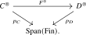
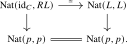

The definition of symmetric monoidal \(\infty \)-categories as commutative monoids in \(\Cat _{\infty }\) makes it easy to talk about symmetric monoidal functors. It is a priori less clear how to define lax symmetric monoidal functors: functors \(F\colon C \to D\) that come equipped with lax structure maps \[ F(X_1) \otimes \dots \otimes F(X_n) \to F(X_1 \otimes \dots \otimes X_n), \] for \(X_1, \dots , X_n \in C\), that are coherently compatible with the symmetric monoidal structures of \(C\) and \(D\). The operadic perspective on symmetric monoidal \(\infty \)-categories provides a quick definition:
Definition 14.5.1. Let \(C\) and \(D\) be symmetric monoidal \(\infty \)-categories. A lax symmetric monoidal functor \(C \to D\) is a morphism of \(\infty \)-operads \(\Mm _C \to \Mm _D\). An oplax symmetric monoidal functor is a morphism of \(\infty \)-operads \(\Mm _{C\catop } \to \Mm _{D\catop }\). We denote by \[ \Cat _{\infty }^{\otimes \text {-lax}} \quad \subseteq \quad \Op _{\infty } \] the full subcategory spanned by the (multimorphism operads of) symmetric monoidal \(\infty \)-categories.
We write \[ \Fun ^{\otimes \text {-lax}}(C,D) \quad := \quad \Fun _{\Op _{\infty }}(\Mm _C,\Mm _D) \] for the \(\infty \)-category of lax symmetric monoidal functors from \(C\) to \(D\).
The \(\infty \)-category \(\Fun ^{\otimes }(C,D)\) identifies with the full subcategory of \(\Fun ^{\otimes \text {-lax}}(C,D)\) spanned by the lax symmetric monoidal functors whose structure maps are isomorphisms. Indeed, these are precisely the functors over \(\Span (\Fin )\) that preserve cocartesian morphisms, so the identification follows from straightening. Passing to groupoid cores shows that \(\Mm \colon \Cat _{\infty }^{\otimes }\to \Op _{\infty }\) is a (non-full) subcategory inclusion.
Let us unwind how to recover the lax structure maps. An operad map \(\Mm _C \to \Mm _D\) is encoded by a commutative triangle of the form

Passing to fibers over \(\lra {1}\) gives an underlying functor \(F\colon C \to D\). The fact that \(F^{\otimes }\) preserves finite products means that on objects it is given as \(F^{\otimes }(X_1, \dots , X_n) = (F(X_1), \dots , F(X_n))\), and this also fully specifies \(F^{\otimes }\) on inert maps. To understand what \(F^{\otimes }\) does on active maps, it suffices to consider the case \((X_1, \dots , X_n) \to X_1 \otimes \dots \otimes X_n\), for which the image in \(D^{\otimes }\) takes the form of a map \[ (F(X_1), \dots , F(X_n)) \to F(X_1 \otimes \dots \otimes X_n) \] lifting the span \(\lra {n} \xleftarrow {=} \lra {n} \to \lra {1}\). This map uniquely factors through the cocartesian morphism \((F(X_1), \dots , F(X_n)) \to F(X_1) \otimes \dots \otimes F(X_n)\), resulting in the expected lax structure map.
For oplax symmetric monoidal functors the structure maps point the other way.
Construction 14.5.2. For an \(\infty \)-operad \(\Oo \), the construction \(C \mapsto \Alg _{\Oo }(C)\) defines a functor \[ \Alg _{\Oo }(-) := \Fun _{\Op _{\infty }}(\Oo ,-)\colon \Cat _{\infty }^{\otimes \text {-lax}} \to \Cat _{\infty }. \] Given a lax symmetric monoidal functor \(F\colon C \to D\), the induced functor \(\Alg _{\Oo }(C) \to \Alg _{\Oo }(D)\) is given by postcomposition with \(\Mm _C \to \Mm _D\). Its functoriality follows directly from functoriality of postcomposition in the defining fibers of functor categories.
14.5.1 Lax symmetric monoidal right adjoints
A right adjoint to a symmetric monoidal functor inherits a lax symmetric monoidal structure. We construct this structure by lifting the adjunction to the total categories over \(\Span (\Fin )\).
To formulate the compatibility of the lifted adjunction with the maps to \(\Span (\Fin )\), we first record the small amount of relative adjunction theory that we will need. Given two functors \(p\colon C \to B\) and \(q\colon D \to B\), we write \[ \Fun _{/B}(C,D) := \Fun (C,D)\times _{\Fun (C,B)}\{p\}, \] where the map to \(\Fun (C,B)\) is given by postcomposition with \(q\). Thus an object of \(\Fun _{/B}(C,D)\) consists of a functor \(H\colon C \to D\) together with a specified identification \(qH \simeq p\).
Definition 14.5.3 (Relative adjunction). Let \(L\) be an object of \(\Fun _{/B}(C,D)\). A right adjoint to \(L\) relative to \(B\) consists of an object \(R \in \Fun _{/B}(D,C)\) together with a morphism \[ \epsilon \colon LR \to \id _D \] in \(\Fun _{/B}(D,D)\) whose image in \(\Fun (D,D)\) exhibits the underlying functor of \(R\) as a right adjoint to the underlying functor of \(L\). We then call \(L\dashv R\) an adjunction relative to \(B\).
Equivalently, we may specify the unit over \(B\):
Lemma 14.5.4 (Unit formulation of relative adjunctions). Let \(L \in \Fun _{/B}(C,D)\) and \(R \in \Fun _{/B}(D,C)\). The following data are equivalent:
- (1)
-
A morphism \(\epsilon \colon LR \to \id _D\) in \(\Fun _{/B}(D,D)\) which exhibits \(R\) as a right adjoint to \(L\) after forgetting to \(\Fun (D,D)\).
- (2)
-
A morphism \(\eta \colon \id _C \to RL\) in \(\Fun _{/B}(C,C)\) which exhibits \(L\) as a left adjoint to \(R\) after forgetting to \(\Fun (C,C)\).
Proof. Suppose first that the data in (1) are given. By Proposition 22.1.2, composition with the counit gives an equivalence \[ \Nat (\id _C,RL) \iso \Nat (L,L), \qquad \alpha \longmapsto (\epsilon L)(L\alpha ). \] Under the specified identifications over \(B\), the fact that \(\epsilon \) is a morphism in \(\Fun _{/B}(D,D)\) gives a commutative square

It therefore restricts to an equivalence on the fibers over \(\id _p\), which are the hom animae \[ \Hom _{\Fun _{/B}(C,C)}(\id _C,RL) \iso \Hom _{\Fun _{/B}(C,D)}(L,L). \] The preimage of \(\id _L\) gives a morphism \(\eta \colon \id _C \to RL\) over \(B\), together with an identification \((\epsilon L)(L\eta ) \simeq \id _L\) in \(\Fun _{/B}(C,D)\). After forgetting the maps to \(B\), this is the unit corresponding to \(\epsilon \) under Proposition 22.1.2, so it gives the data in (2).
The converse follows by duality. These constructions are inverse, since they restrict the usual correspondence between unit and counit data to the fibers over the identity transformations of \(p\) and \(q\); the triangle identifications therefore also hold over \(B\). □
Lemma 14.5.5 (Relative adjunctions on functor categories). Let \(L\colon C\rightleftarrows D\noloc R\) be an adjunction relative to \(B\). For every functor \(E \to B\), postcomposition induces an adjunction \[ L_*\colon \Fun _{/B}(E,C) \rightleftarrows \Fun _{/B}(E,D)\noloc R_*. \]
Proof. The counit in Definition 14.5.3 and the corresponding unit of Lemma 14.5.4 may both be whiskered with a functor \(E \to C\) or \(E \to D\) over \(B\). They therefore give a unit and counit between the displayed functors, with triangle identifications inherited from those of \(L\dashv R\). The result follows from Proposition 22.1.2. □
We now produce the promised lax symmetric monoidal structure on the right adjoint of a symmetric monoidal functor.
Proposition 14.5.6. Let \(L\colon C\to D\) be a symmetric monoidal functor whose underlying functor admits a right adjoint \(R\). Then \(L^{\otimes }\) admits a right adjoint \(R^{\otimes }\) with a canonical structure over \(\Span (\Fin )\), refining \(R\), for which \(L^{\otimes }\dashv R^{\otimes }\) is a relative adjunction. The functor \(R^{\otimes }\) preserves finite products and hence equips \(R\) with a lax symmetric monoidal structure.
Proof. For \(Y=\{y_j\}_{j\in J}\), take \(\{Ry_j\}_{j\in J}\) as the candidate right adjoint value. The componentwise counits of \(L\dashv R\) give a map \[ \epsilon _Y\colon \{LRy_j\}_{j\in J}\to \{y_j\}_{j\in J}. \] By Lemma 22.1.4, it suffices to show that for every tuple \(\{x_i\}_{i\in I}\) the map \begin {equation} \label {eq:Monoidal_Adjunction} \Hom _{C^{\otimes }}(\{x_i\},\{Ry_j\})\xrightarrow {\epsilon _Y\circ L^{\otimes }(-)}\Hom _{D^{\otimes }}(\{Lx_i\},\{y_j\}) \end {equation} is an isomorphism. Both sides map to \(\Hom _{\Span (\Fin )}(I,J)\). By Lemma 14.1.10, Lemma 14.4.6, the induced map on fibers over \(\alpha =(I\xleftarrow {f}K\xrightarrow {g}J)\) is the composite \begin {align*} \prod _{j\in J}\Hom _C\left (\bigotimes _{k\in g^{-1}(j)}x_{f(k)},Ry_j\right ) &\simeq \prod _{j\in J}\Hom _D\left (L\left (\bigotimes _{k\in g^{-1}(j)}x_{f(k)}\right ),y_j\right ) \\ &\simeq \prod _{j\in J}\Hom _D\left (\bigotimes _{k\in g^{-1}(j)}Lx_{f(k)},y_j\right ). \end {align*}
The first isomorphism is induced by the adjunction and the second by the symmetric monoidal structure of \(L\). This constructs the right adjoint \(R^{\otimes }\) and its counit.
Applying \(p_D\) to the counit gives a natural transformation \[ p_C R^{\otimes }\simeq p_D L^{\otimes }R^{\otimes }\xrightarrow {p_D\epsilon }p_D \] whose components are identities by construction. It is therefore an isomorphism, equipping \(R^{\otimes }\) with a structure over \(\Span (\Fin )\) for which the counit lies over the base. This gives the relative adjunction. Finally, \(R^{\otimes }\) preserves finite products because it is a right adjoint, and its restriction to the singleton fiber is \(R\) by construction. Thus it defines the asserted lax symmetric monoidal structure. □
The lax structure map \(Ry_1\otimes \dots \otimes Ry_n\to R(y_1\otimes \dots \otimes y_n)\) is adjoint to the composite \[ L(Ry_1\otimes \dots \otimes Ry_n)\simeq LRy_1\otimes \dots \otimes LRy_n\xrightarrow {\bigotimes _i\epsilon _{y_i}}y_1\otimes \dots \otimes y_n. \] For \(n=0\), this gives the unit map \(\unit _C\to R(\unit _D)\).
Remark 14.5.7. In the previous proposition, it does not suffice for \(L\) to be a lax symmetric monoidal functor itself. It would suffice for \(L\) to be an oplax symmetric monoidal functor, but producing the lax symmetric monoidal right adjoint is more subtle in this case. Dually, the left adjoint to a lax symmetric monoidal functor is oplax symmetric monoidal. We refer to [Haugseng et al. (2023a), Proposition A] for a detailed discussion.
14.5.2 Symmetric monoidal adjunctions
We now use the lax symmetric monoidal structure on a right adjoint to obtain adjunctions on \(\infty \)-categories of algebras. Applying this to the constant-diagram functor will show that limits of algebras are computed at each color.
Definition 14.5.8. A symmetric monoidal adjunction is an adjunction \[ L\colon C\rightleftarrows D\noloc R \] between symmetric monoidal \(\infty \)-categories in which \(L\) is symmetric monoidal and \(R\) is equipped with the canonical lax symmetric monoidal structure of Proposition 14.5.6.
Lemma 14.5.9 (Adjunctions on \(\Oo \)-algebras). Every symmetric monoidal adjunction \(L\dashv R\) induces, for each \(\infty \)-operad \(\Oo \), an adjunction \[ \Alg _{\Oo }(L)\colon \Alg _{\Oo }(C) \rightleftarrows \Alg _{\Oo }(D)\noloc \Alg _{\Oo }(R). \] The underlying functors are obtained by applying \(L\) and \(R\), respectively, at every color of \(\Oo \).
Proof. By Proposition 14.5.6, the adjunction \(L^{\otimes }\dashv R^{\otimes }\) is relative to \(\Span (\Fin )\). Applying Lemma 14.5.5 to \(p_{\Oo }\colon \Oo ^{\otimes } \to \Span (\Fin )\) gives an adjunction \[ \Fun _{/\Span (\Fin )}(\Oo ^{\otimes },C^{\otimes }) \rightleftarrows \Fun _{/\Span (\Fin )}(\Oo ^{\otimes },D^{\otimes }). \] Postcomposition with both functors preserves finite-product-preserving functors because \(L^{\otimes }\) and \(R^{\otimes }\) are morphisms of \(\infty \)-operads. Restricting the adjunction to these subcategories gives the asserted adjunction on \(\Alg _{\Oo }(C)\) and \(\Alg _{\Oo }(D)\). □
As an application, it follows that limits of \(\Oo \)-algebras may be computed pointwise.
Proposition 14.5.10 (Limits of \(\Oo \)-algebras). Let \(C\) be a symmetric monoidal \(\infty \)-category, let \(\Oo \) be an \(\infty \)-operad, and let \(I\) be a small \(\infty \)-category such that \(C\) admits \(I\)-indexed limits. Then \(\Alg _{\Oo }(C)\) admits \(I\)-indexed limits, and the evaluation functors \[ \ev _x\colon \Alg _{\Oo }(C)\to C, \qquad A\mapsto A_x \qquad (x\in \Oo ^{\simeq }), \] jointly create them.
Proof. By Corollary 22.2.2, the constant-diagram functor fits into an adjunction \[ \const \colon C\rightleftarrows \Fun (I,C)\noloc \lim _I. \] Being given by restriction along \(I \to *\), the functor \(\const \) is symmetric monoidal for the pointwise symmetric monoidal structure, so Proposition 14.5.6 makes this a symmetric monoidal adjunction. By Lemma 14.5.9, it induces an adjunction \[ \Alg _{\Oo }(C) \rightleftarrows \Alg _{\Oo }(\Fun (I,C)) \simeq \Fun (I,\Alg _{\Oo }(C)). \] Under the equivalence of Lemma 14.4.13, the left adjoint is the constant-diagram functor. The right adjoint consequently computes limits in \(\Alg _{\Oo }(C)\), and its value at every color \(x\) is \(\lim _I A_x\). Thus all the evaluation functors preserve these limits. They jointly detect isomorphisms: every object of \(\Oo ^{\otimes }\) is a finite product of colors, and algebra maps preserve these products, so a natural transformation that is invertible at every color is invertible at every object. Consequently the evaluation functors jointly reflect limit cones and hence jointly create the limits. □
14.5.3 Symmetric monoidal left adjoints
Let \(R\colon D\to C\) be lax symmetric monoidal and suppose its underlying functor admits a left adjoint \(L\). The lax structure maps of \(R\) induce canonical maps \[ L\left (\bigotimes _{i\in I}x_i\right )\longrightarrow \bigotimes _{i\in I}Lx_i, \] adjoint to the composites \[ \bigotimes _{i\in I}x_i\xrightarrow {\bigotimes _i\eta _{x_i}}\bigotimes _{i\in I}RLx_i\xrightarrow {\lax _R}R\left (\bigotimes _{i\in I}Lx_i\right ). \] We show that if these maps are isomorphisms, then \(L\) admits a symmetric monoidal structure compatible with the adjunction.
Proposition 14.5.11. Let \(R\colon D\to C\) be a lax symmetric monoidal functor whose underlying functor admits a left adjoint \(L\). Suppose that the canonical maps \[ L\left (\bigotimes _{i\in I}x_i\right )\longrightarrow \bigotimes _{i\in I}Lx_i \] are isomorphisms for every finite family. Then \(R^{\otimes }\) admits a left adjoint \(L^{\otimes }\) over \(\Span (\Fin )\), refining \(L\), which preserves cocartesian morphisms and makes \(L^{\otimes }\dashv R^{\otimes }\) a relative adjunction. This equips \(L\) with a symmetric monoidal structure for which \(L\dashv R\), with the given lax structure on \(R\), is a symmetric monoidal adjunction.
It suffices to check the hypothesis for empty and two-element families, that is, for the maps \[ L(\unit _C)\to \unit _D\qquadtext {and}L(x\otimes y)\to Lx\otimes Ly. \] Indeed, taking adjoints of the substitution identities for the lax structure of \(R\) shows that the canonical maps respect iterated tensor products. The unary map is the identity by the triangle identity, so induction gives the assertion.
Proof. For a tuple \(\{x_i\}_{i\in I}\), take \(\{Lx_i\}_{i\in I}\) as the candidate left adjoint value, with unit given by the componentwise maps \(\eta _{x_i}\colon x_i\to RLx_i\). By Lemma 22.1.4, we must show that applying \(R^{\otimes }\) and precomposing with this unit gives an isomorphism \[ \Hom _{D^{\otimes }}(\{Lx_i\},\{y_j\})\longrightarrow \Hom _{C^{\otimes }}(\{x_i\},\{Ry_j\}) \] for every tuple \(\{y_j\}_{j\in J}\). By Lemma 14.1.10, Lemma 14.4.6, its map on fibers over a span \(\alpha =(I\xleftarrow {f}K\xrightarrow {g}J)\) is the product over \(j\in J\) of \begin {align*} \Hom _D\left (\bigotimes _{k\in g^{-1}(j)}Lx_{f(k)},y_j\right ) &\longrightarrow \Hom _D\left (L\left (\bigotimes _{k\in g^{-1}(j)}x_{f(k)}\right ),y_j\right ) \simeq \Hom _C\left (\bigotimes _{k\in g^{-1}(j)}x_{f(k)},Ry_j\right ). \end {align*}
The first map is precomposition with the canonical map in the hypothesis and is therefore an isomorphism; the second is adjunction. Their composite is the required map by the definition of the canonical map and naturality of the lax structure of \(R\). This constructs \(L^{\otimes }\) and its unit.
Applying \(p_C\) to the unit gives a natural isomorphism \[ p_C\xrightarrow {p_C\eta }p_C R^{\otimes }L^{\otimes }\simeq p_D L^{\otimes }, \] since its components are identities by construction. This equips \(L^{\otimes }\) with a structure over \(\Span (\Fin )\) for which the unit lies over the base. By Lemma 14.5.4, the adjunction is relative.
Let \(\{x_i\}\to \alpha _!\{x_i\}\) be a cocartesian lift of \(\alpha \). Applying \(L^{\otimes }\) and factoring through a cocartesian lift in \(D^{\otimes }\) gives a map \[ \alpha _!\{Lx_i\}\longrightarrow L^{\otimes }(\alpha _!\{x_i\}). \] Naturality of the unit, under the adjunction \(L\dashv R\), says that its \(j\)-th component composed with the canonical map \[ L\left (\bigotimes _{k\in g^{-1}(j)}x_{f(k)}\right )\longrightarrow \bigotimes _{k\in g^{-1}(j)}Lx_{f(k)} \] is the identity. Thus its components are the inverses of these isomorphisms, so \(L^{\otimes }\) preserves cocartesian morphisms. In particular, it preserves inert morphisms and hence finite products by Corollary 14.1.14. It therefore refines \(L\) to a symmetric monoidal functor. Uniqueness of the relative right adjoint identifies the given lax structure on \(R\) with the one induced by this symmetric monoidal structure. □